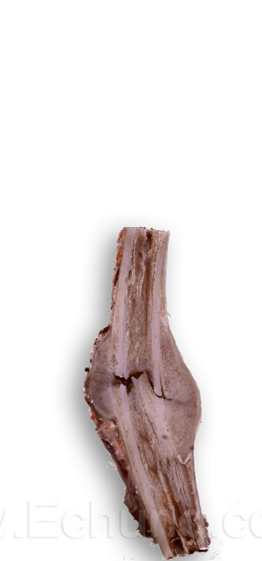
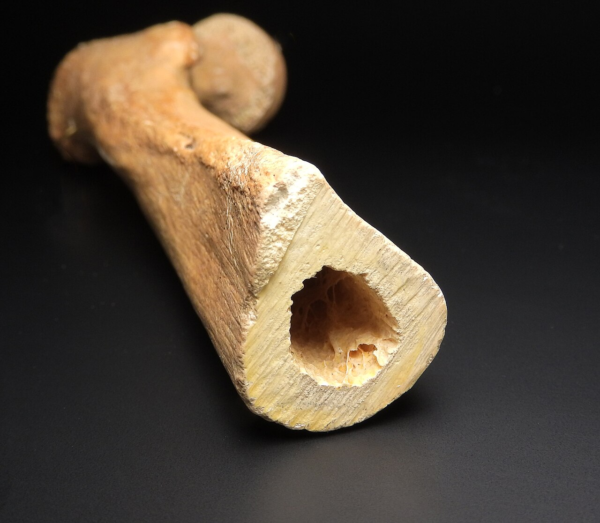
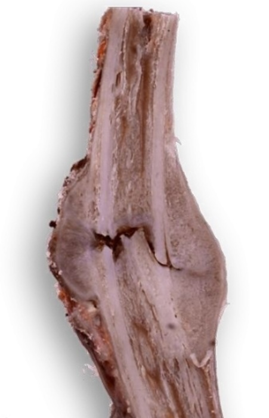
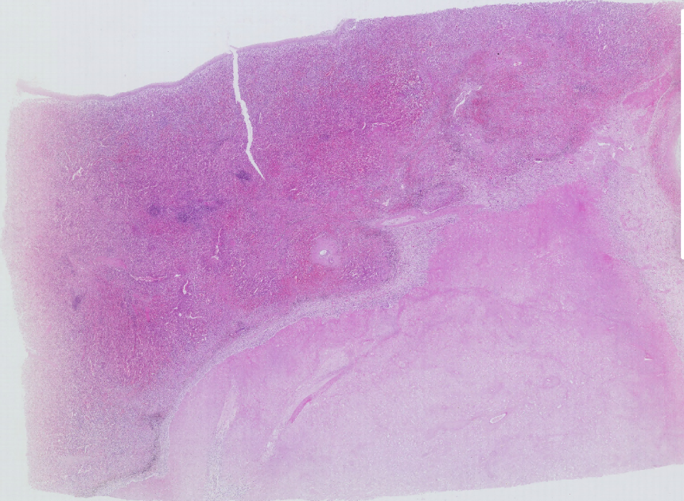
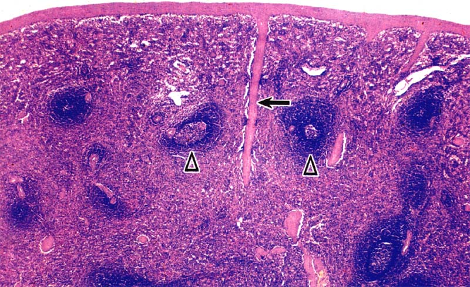
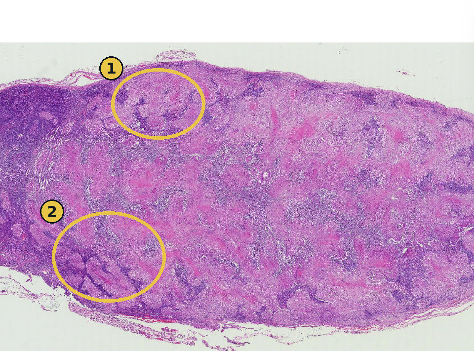
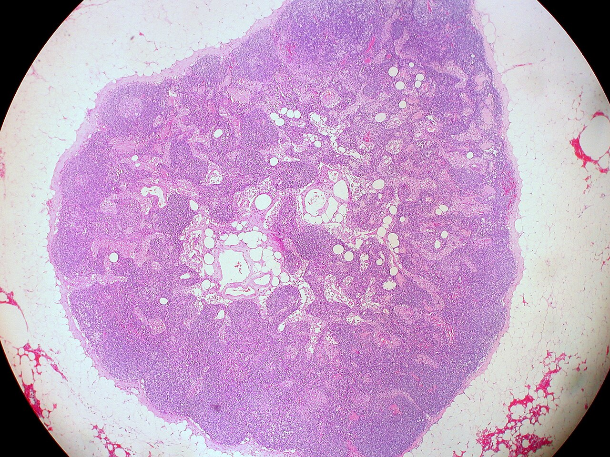
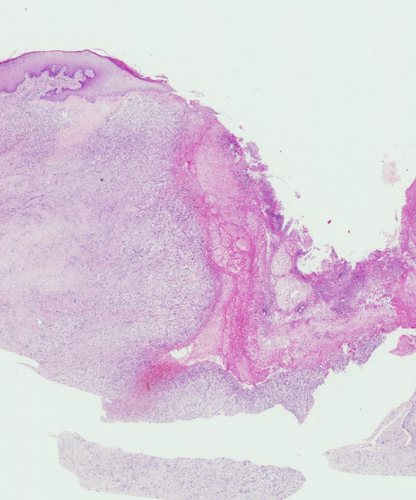
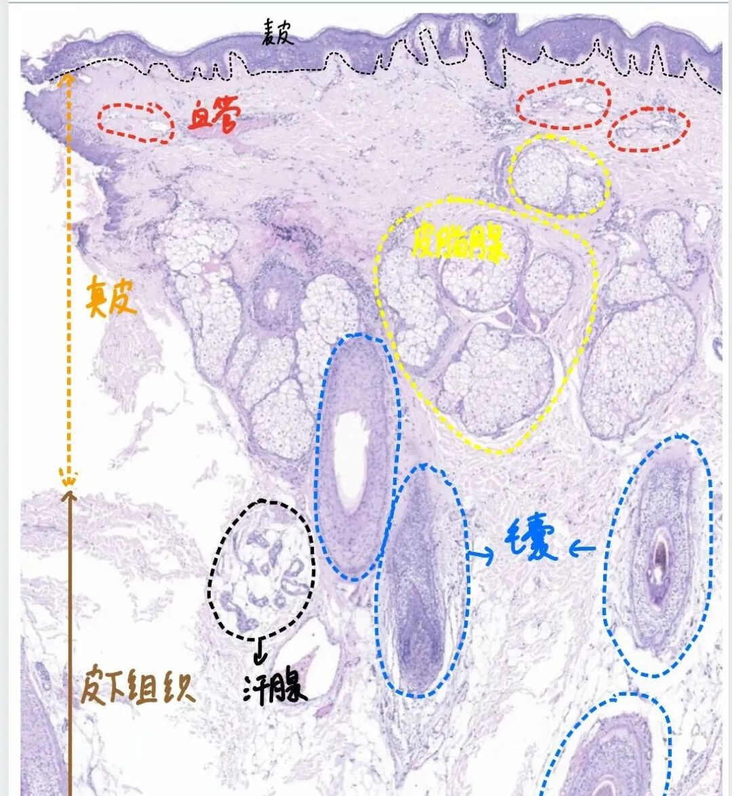

Spot-exam practiceتمرین امتحان نقطهای
Cover the diagnosis lines above and name each specimen from the image and number
alone; check yourself against the answer key at the end.

No.13*

No.18*
Slide No.86
Slide No.20*
Granulation tissue is the specialized tissue that fills a defect during
healing: new capillary sprouts (angiogenesis) plus proliferating fibroblasts, in a loose,
edematous, myxoid stroma infiltrated by inflammatory cells. Its pink, granular, translucent gross
appearance gives it the name.
Fracture repair follows the identical logic, on a scaffold of bone rather than skin: a hematoma
forms first, organizes into granulation tissue, then a soft (fibrous/cartilaginous) callus bridges
the fracture, and finally that soft callus is remodelled into a hard, bony callus.

Gross A fracture of the long tubular bone at its mid-shaft, with a
spindle-shaped expansion (fibrous callus) around the fracture site. The callus is proliferated by a
large amount of fibrous tissue, becoming progressively organized and then fibrosed.


A normal diaphysis keeps the same calibre for its entire length, since cortical bone is added and
removed at a steady rate to match the loads it carries. A callus breaks that rule on purpose: healing
bone briefly overshoots on width because a wide, if weak, fibrous bridge is mechanically safer during
the vulnerable early weeks than a thin, precisely aligned one, and only after the fragments are
solidly joined does remodelling shave the swelling back down to the normal cylindrical shaft seen at
right. Seeing the normal shaft first makes that oversized, spindle-shaped stage read as a temporary
scaffold rather than as a deformity.
| Stage | What forms |
|---|---|
| Hematoma | Blood clot fills the fracture gap within hours |
| Soft callus | Granulation tissue, then fibrous/cartilaginous callus, bridges the fragments (this specimen) |
| Hard (bony) callus | The soft callus is mineralized into woven bone |
| Remodelling | Woven bone is remodelled into lamellar bone along stress lines, callus shrinks toward normal contour |

Micro In the irregular infarcted area of the spleen, nuclei have
disappeared and only a faint outline of the splenic structure remains. Inflammatory cells infiltrate
around the infarction, forming an inflammatory response zone, accompanied by granulation tissue.
Splenic sinus congestion is obvious, and the white pulp (lymphoid nodules) is compressed and
atrophic.

Compare directly with Fig. 2 (Part Two): the same round white-pulp nodules are here, but
shrunken and compressed rather than plump, and the surrounding red pulp has lost its nuclei
entirely, exactly the "ghost architecture" that defines coagulative necrosis.

Micro Numerous nodular lesions (tuberculous nodules, granulomas) are
seen throughout the lymph node. At high magnification each nodule is composed of short spindle
cells (epithelioid cells) in irregular arrangement, with scattered Langhans' giant cells. Many
nodules show focal caseous necrosis (fine granular, red-staining material) at their
centre.

A tuberculous granuloma has a signature layout worth naming layer by layer: a central zone of
caseous necrosis, surrounded by epithelioid macrophages and Langhans' giant cells, surrounded in
turn by a rim of lymphocytes and fibroblasts. This same specimen pairs directly with Gross No.14
(tuberculoma): the microscope explains why the gross lesion is cheese-like and
layered.
Reading the low-power field takes discipline: at this magnification you are not trying to see
individual epithelioid cells or Langhans giant cells, you are trying to recognise the pattern of
many separate pale islands scattered through an otherwise uniform, darker lymphoid background, each
island one granuloma. That pattern recognition step, count the pale nodules before you ever switch
to high power, is what tells you this is granulomatous lymphadenitis rather than a single localised
abscess, because a bacterial abscess would give you one big cavity, not a field peppered with many
separate small ones.

Micro At the base of the ulcer, necrotic tissue (fine red granular
material) and inflammatory exudate, including inflammatory cells and fibrin, form a layer of
necro-inflammatory debris; beneath it lies abundant granulation tissue. The granulation tissue is
loose, with edematous stroma and pale staining; numerous new capillaries and fibroblasts are seen,
with scattered inflammatory cells infiltrating throughout.

Healing by first intention closes a clean, apposed incision with minimal granulation
tissue and a fine scar. Healing by second intention, seen here, closes a large, open defect
(an ulcer, a wide wound) that cannot be directly apposed: it needs substantially more granulation
tissue to fill the gap, more wound contraction by myofibroblasts, and leaves a larger
scar.
Read this slide bottom-up, in the order the tissue itself was rebuilt: granulation tissue first,
then debris cleared from its surface last, not the reverse. Circle 2's loose, capillary-rich tissue
is the living, working layer; it appeared first, as soon as fibroblasts and new vessels could grow
into the defect. Circle 1's debris is what is left of the original injury, dead cells, fibrin,
neutrophils, and it sits on top only because it has not yet been fully cleared away. Compare that
disordered surface with the flat, intact epidermis at left: the ulcer will not be considered healed
until circle 1 disappears completely and a new epidermis has grown back over circle 2 from the
wound edges inward.
Cover the diagnosis lines above and name each specimen from the image and number
alone; check yourself against the answer key at the end.